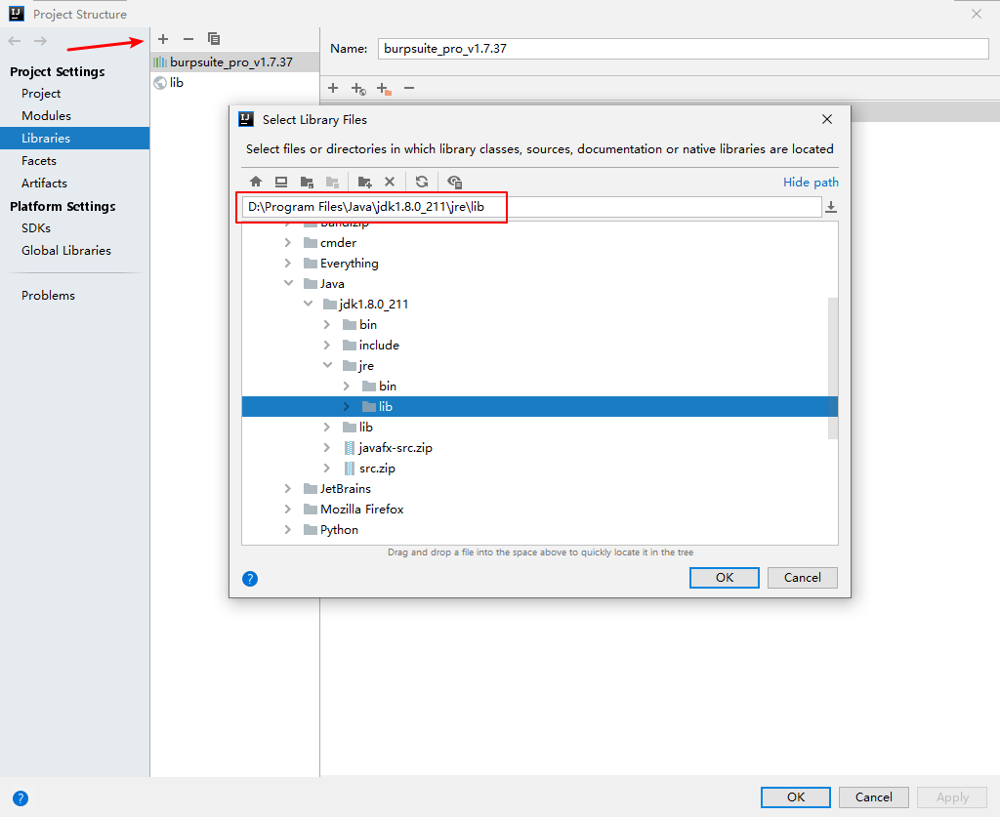
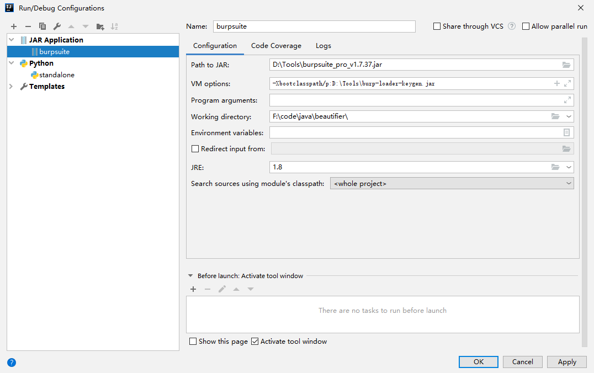

java2python
使用java2python将网上的java代码（如swing示例代码）转成python，方便开发。java2python基于python2编写，也很久没维护了，但还是可以用用。
安装（直接使用pip install java2python安装不成功，参考https://github.com/natural/java2python/issues/40）：
1 | virtualenv -p python2 env_j2py |
使用：
输入文件： 执行
j2py file.java使用标准输出： 执行
j2py， 输入java代码，按Ctrl+d 结束输入
结果有些错误，需手动修改下
使用IDEA开发
参考：https://overthread99.wordpress.com/2017/07/11/import-java-jars-into-intellij-jython-project/
新建工程，选择Empty Project
安装Python插件：File->Settings->Plugins，搜索Python插件并安装
设置SDK：File->Project Structure->project->选择Jython.exe作为SDK
添加Libraries：File->Projcet Structure->Libraries->点击+按钮（New Project Library）->选择Java->选择JDK里JRE里的lib目录。

再添加一项选择burpsuite.jar路径IDEA支持对Java类、方法的Auto-complete。（PyChram不支持）
调试
利用简单的输出来调试：
print("output")、callback.printOutput("output")：输出到Extender->选择自己的插件->Extensions->Outputcallback.printError("error")：输出到Extender->选择自己的插件->Extensions->Errors
使用pdb调试burpsuite插件的Python代码层（参考： https://www.foote.pub/2015/04/08/burp-extender-python.html）：
在实现
IBurpExtender的registerExtenderCallbacks(self, callbacks)方法里加上：1
2
3import sys
sys.stdout = callbacks.getStdout()
sys.stderr = callbacks.getStderr()在需要调试的地方加
import pdb; pdb.set_trace()来下断点使用终端运行burpsuite：
java -jar -Xmx1g -XX:MaxPermSize=1G burpsuite_pro.jar。（也可以配置IDEA的Run/Debug Configurations，添加一项Jar Application类型的运行配置，示例：）
burpsuite添加自己的插件，并将插件的
Output和Errors勾选为Output to system console当运行到
pdb.set_trace()时终端就出现pdb调试会话。